Explore six detailed examples of our museum-quality restoration, re-weaving, and traditional organic cleaning services.
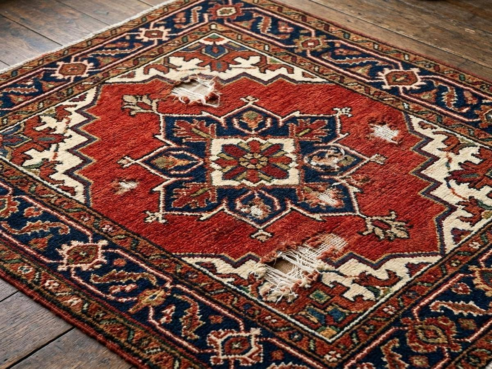
Before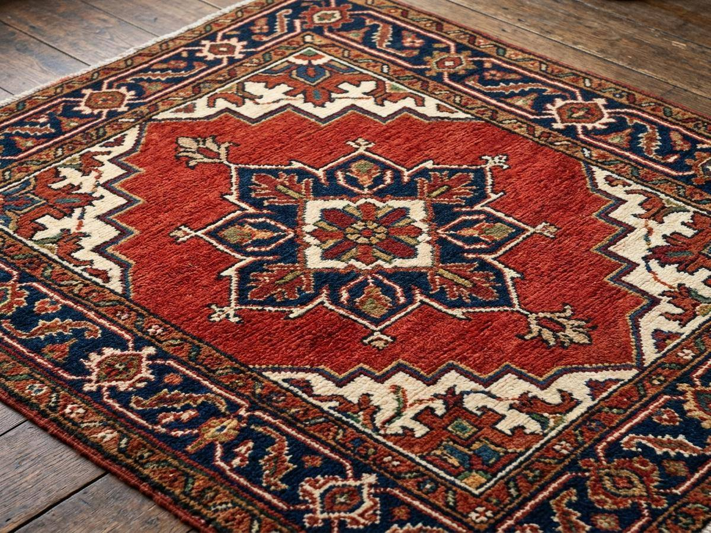
AfterAntique Heriz Rug
Repairing structural foundation and re-weaving wool pile damaged by moths. We reconstruct the warp and weft before re-knotting highland wool.
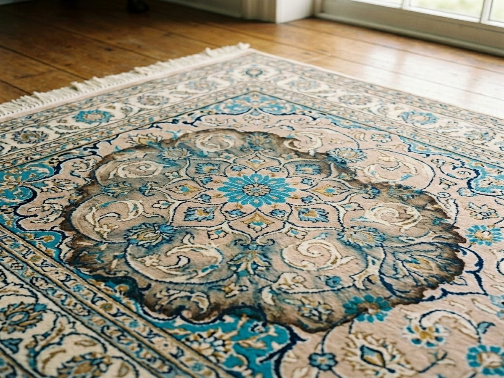
Before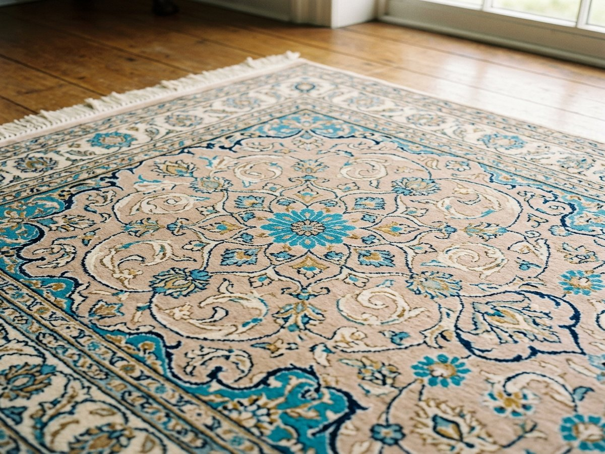
AfterSilk Tabriz Rug
Color-run bleeding correction and fiber stabilization after water exposure. We gently wash out run dyes and restore the natural alignment of silk fibers.
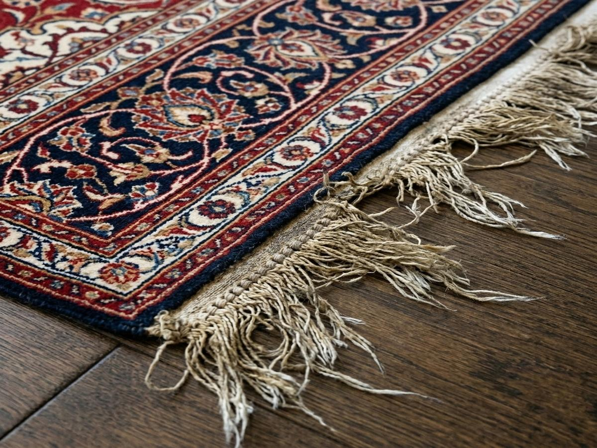
Before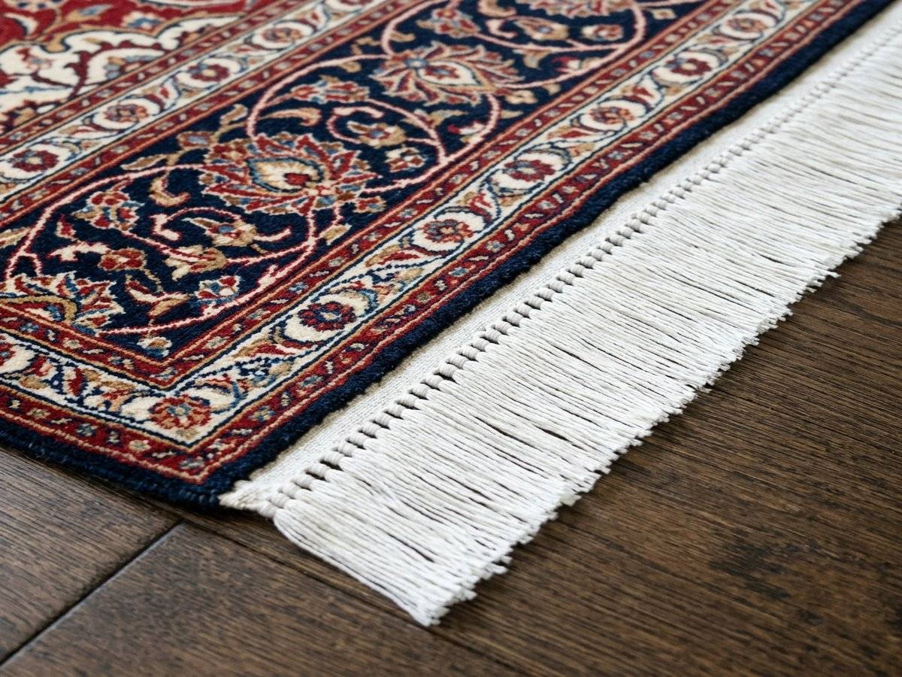
AfterAntique Caucasian Rug
Hand-securing and rebuilding frayed antique cotton fringes. We implement master overcasting to halt unraveling and extend the rug's life.
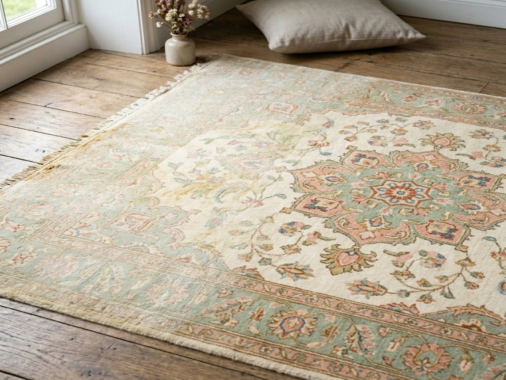
Before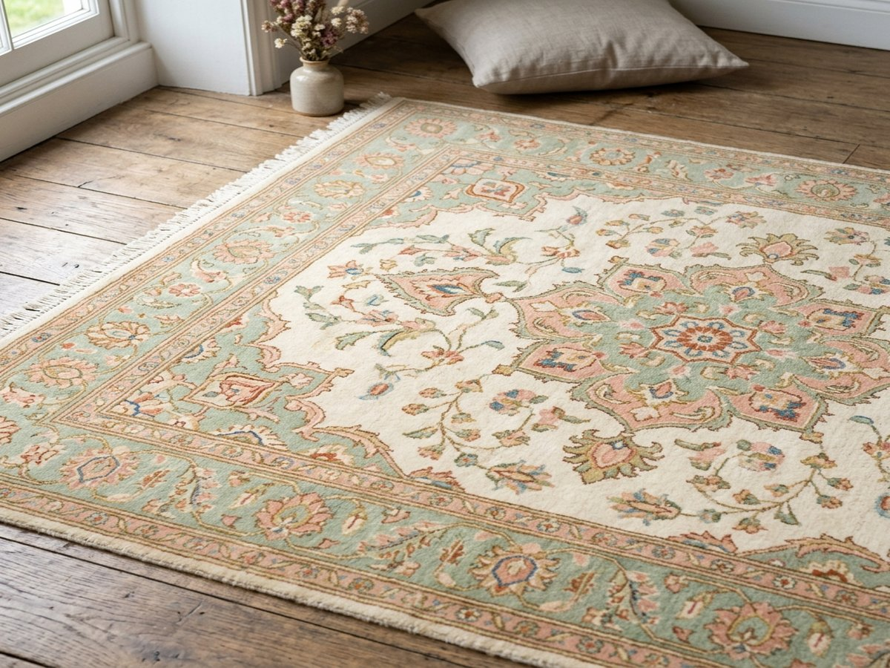
AfterVintage Oushak Rug
Restoring sun-faded areas using organic vegetable-based dyes. We carefully match and re-dye individual faded knots to restore design balance.
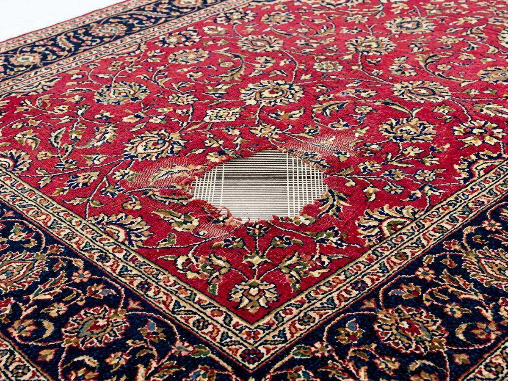
Before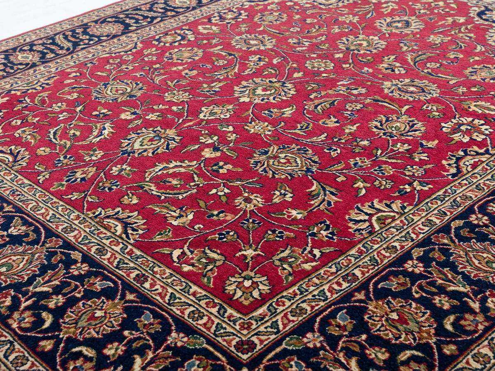
AfterClassic Esfahan Rug
Re-knotting worn foundation areas with matching handspun highland wool. This process recreates the original knot density to make repairs invisible.
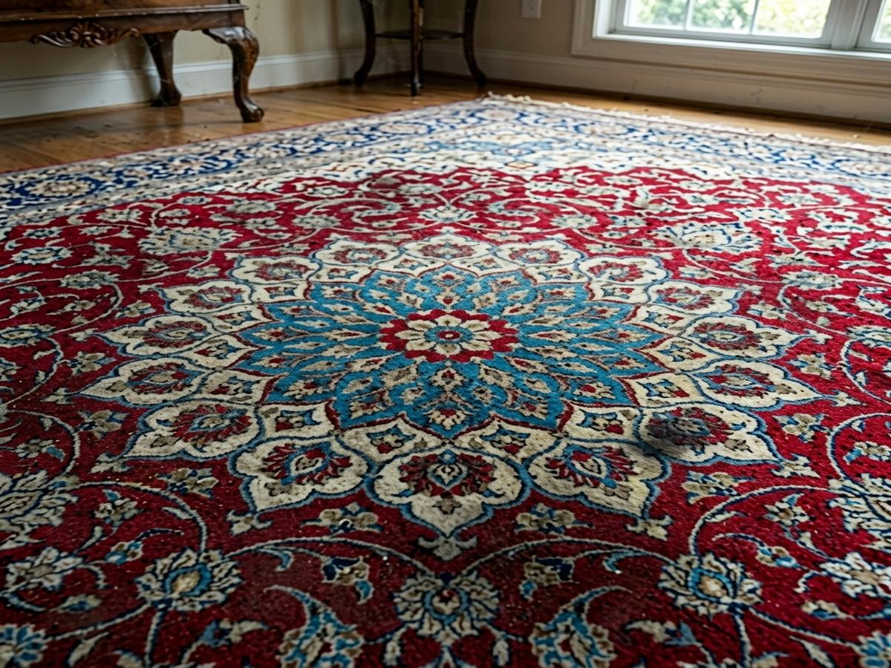
Before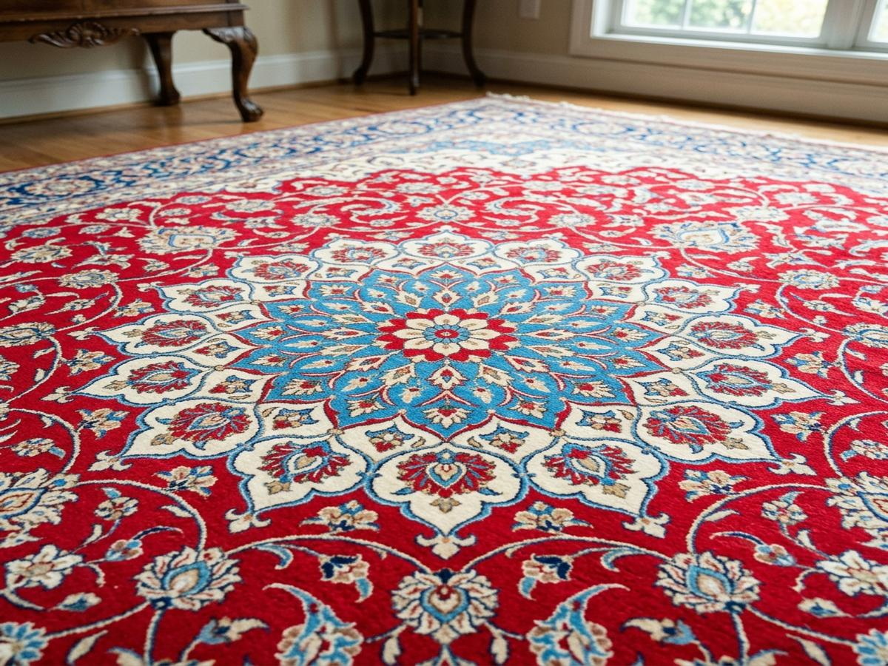
AfterTraditional Kashan Rug
Deep-cleaning accumulated dirt and grit while preserving fiber soft lanolin. Organic vegetable soaps are massaged and rinsed away before sun-drying.
Need professional restoration or cleaning for your heirloom rug?
Send photos of your rug’s worn fringes, moth damage, or soiled areas. Master Weaver Mo Nooraee will provide a detailed evaluation.
Go to Evaluation Form